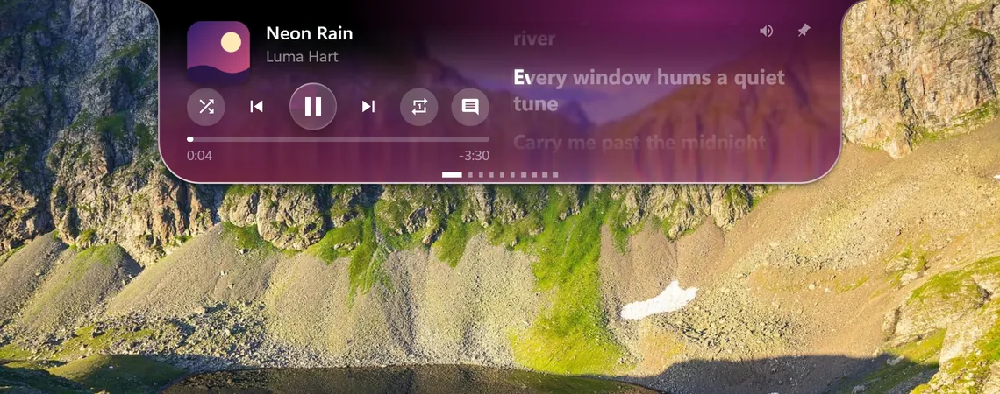
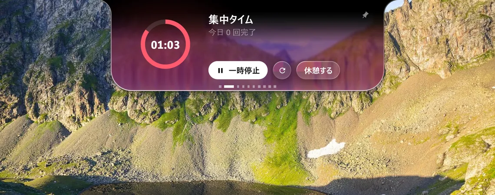
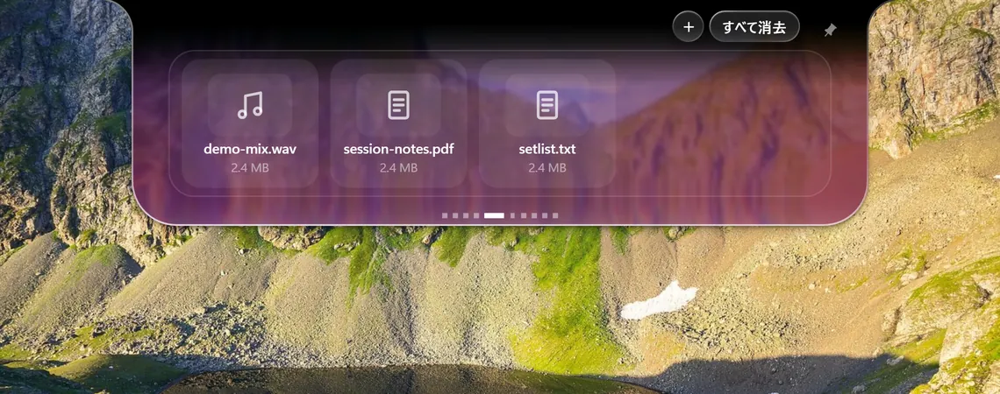
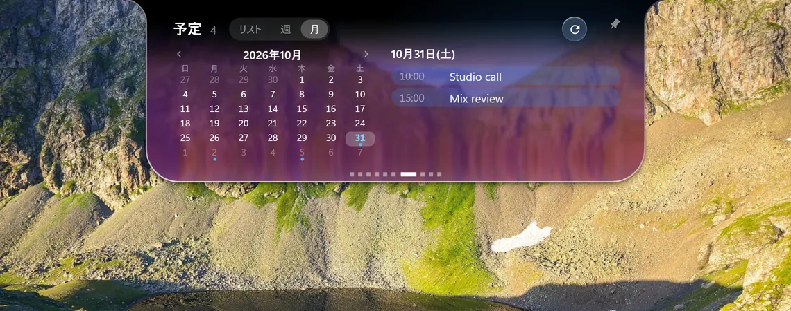
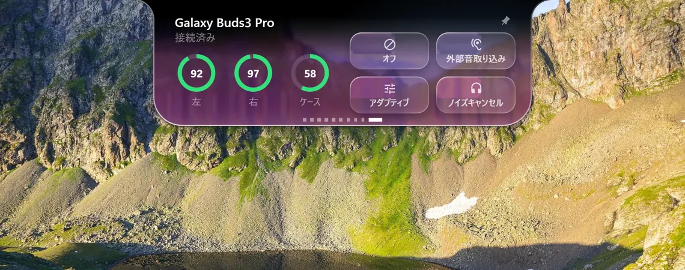
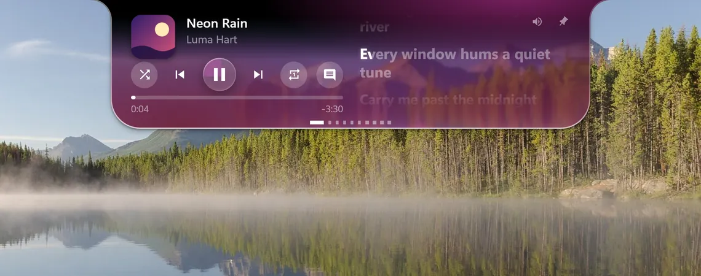
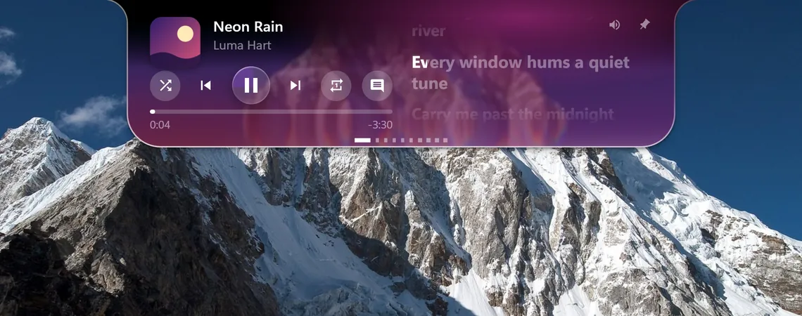
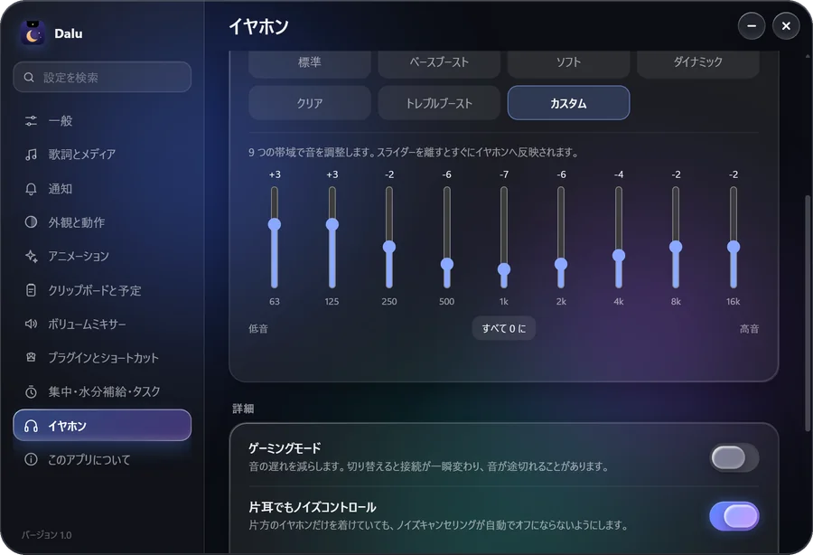
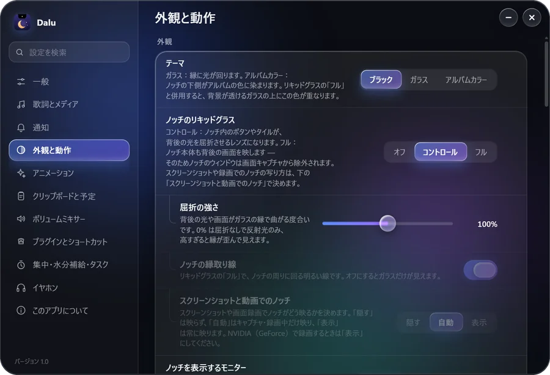

声に寄り添う歌詞。
Streetlights bloom along the river.
Every window hums a quiet tune.
Carry me past the midnight bridges.
タイミング情報のある曲なら、単語のひとつひとつまで。
ひとつのノッチ、五つのページ。

一語ずつ、ぴったりと。
タイミング情報のある曲は、歌うそばから単語が光ります。

ひとつに集中。
ポモドーロ、タイマー、水分、やること。すべてノッチの中に。

置いて、持ち出す。
ノッチにファイルを置いて、好きなウィンドウへドラッグ。

今日を、ひと目で。
カレンダーのアドレス（.ics）を貼って、リスト・週・月で表示。

ひとタップで静かに。
何も開かずに、Galaxy Buds のノイズコントロールを切り替え。
背後の世界を曲げるガラス。
壁紙を選んでください。ノッチが背後の景色を屈折させます。




ドットに乗せると、タブが現れる。
小さなドットは、指した瞬間にタブのアイコンへ変わります。
9 バンド、自分だけの音。
イコライザーを整え、ゲーミングモードを入れ、片耳だけでもノイズコントロールを保てます。Buds3 Pro でのみ確認しています。

あなた流に。
100 以上の設定、4 つの言語、プラグインは JSON ファイル 1 つで。

- インストール
- 管理者権限は不要です。
- 確認
- ダウンロードページに SHA-256 を掲載しています。
- ライセンス
- ソース公開、非商用で利用可（PolyForm Noncommercial 1.0.0）。
コード署名がないため、初回は Windows SmartScreen が警告することがあります。